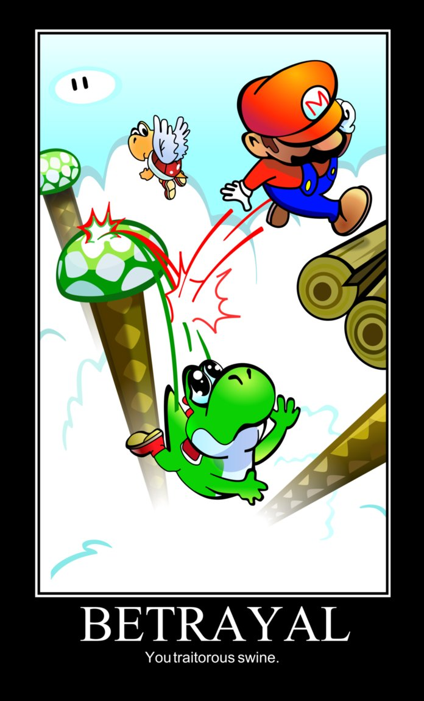

| Newtons Third Law |
|
The Poetic Version
For every action there is an equal and opposite reaction. |
|
The Mathematically Precise Version 1
If A exerts a force on B, B exerts a force on A with equal magnitude and opposite direciton. |
|
The Mathematicall Precise Version 2
If A and B have a collision, they exert forces on each other with equal magnitdue and opposite direction. |
This video is taken from the dated but still excellent documentary The Great War on WWI. World War One was a artillery based war: most of the war was conducted by troops stationed far apart from each other firing artillery shells on a near continuous basis. As such, we have many great archival videos of such artillery shells being released. Whenever a shell is released, what happens to the cannon that launched it? Why?
A rocket engine works by blasting hot fuel downward, which exerts a very strong upward force on the rocket.
The 90s video game Super Mario World is full of great examples of Newton's Third Law. For example, if Mario jumps on a Koopa Troopa, the force exerted back on him pushes him up. In the following video, what happens when Mario and Yoshi exert a downward force on one of the saws? But towards the end of the video is a far more controversial example: When Mario exerts a downward force on Yoshi, what happens to Mario (and what happens to Yoshi?)
In this beautiful PIXAR scene, EVE and WALL-E dance in space. This video combines good examples of of Newton's Third Law and Newton's First Law. The First Law states that if an object is already in motion, it will remain in motion if no other force acts on it. Because WALL-E is in space, n the absence of forces such as air-resistance, friction, or downward gravity, any small motion by WALL-E will continue indefinitely until he somehow exerts another force. How is WALL-E able to exert force on himself? How is this related to Newton's Third Law?
Really good physics point to notice: at about 0:30, WALL-E stops himself from moving by exerting a force in the direction opposite his own motion.